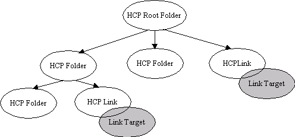

The Hierarchy Content Provider
Preface
The Hierarchy Content Provider ( HCP ) implements a Content Provider for the Universal Content Broker (UCB). It provides access to a persistent, customizable hierarchy of contents.
HCP Contents
The HCP provides three different types of contents: Link, Folder and Root Folder.
A HCP Link is a content which „points“ to another (UCB) content. It is always contained in HCP Folder. A HCP Link has no children.
A HCP Folder is a container for other HCP Folders and HCP Links.
There is at most one instance of a HCP Root Folder at a time. All other HCP contents are children of this folder. The HCP Root Folder can contain HCP Folders and HCP Links. It has the URL „vnd.sun.star.hier:/“.

Creation Of New HCP Contents
HCP Folders and the HCP Root Folder implement the interface XContentCreator. HCP Links and HCP Folders support the command „insert“. Thats why all HCP Folders and the HCP Root Folder as well can create new HCP Folders and HCP Links. To create a new child of a HCP Folder:
Let the parent folder create a new content by calling its createNewContent-method. The content type to use for new folders is application/vnd.sun.star.hier-folder. To create a new link, use the type string application/vnd.sun.star.hier-link.
Set a title at the new folder/link. ( Let the new child execute a setPropertyValues – command, which sets at least the property „Title“ to a non-empty value ). For a link, you need to set the property „TargetURL“ as well at this time to a non-empty value.
Let the new child ( not the parent! ) execute the command „insert“. This will commit the creation process.
URL Scheme for HCP Contents
Each HCP content has an identifier corresponding to the following scheme:
vnd.sun.star.hier:/<path>
where <path> is a hierarchical path of the form
<name>/<name>/.../<name>
where <name> is a string encoded according to the URL conventions.
Examples:
vnd.sun.star.hier:/ ( The URL of the HCP Root Folder )
vnd.sun.star.hier:/Bookmarks/Sun%20Microssystems%20Home%20Page
vnd.sun.star.hier:/Workplace/Printers
Appendix
The following table gives an overview of the different HCP contents.
|
|
UCB Type (returned by XContent::getContentType ) |
Properties |
Commands |
Interfaces |
|---|---|---|---|---|
|
Link |
application/vnd.sun.star.hier-link |
[readonly] ContentType [readonly] IsDocument [readonly] IsFolder Title TargetURL |
getCommandInfo getPropertySetInfo getPropertyValues setPropertyValues insert delete
|
lang::XTypeProvider, lang::XServiceInfo, lang::XComponent, ucb::XContent, ucb::XCommandProcessor, beans::XPropertiesChangeNotifier, beans::XPropertyContainer, beans::XPropertySetInfoChangeNotifier, ucb::XCommandInfoChangeNotifier, container::XChild |
|
Folder |
application/vnd.sun.star.hier-folder |
[readonly] ContentType [readonly] IsDocument [readonly] IsFolder Title |
getCommandInfo getPropertySetInfo getPropertyValues setPropertyValues insert delete open transfer* |
same as HCP Link plus ucb::XContentCreator |
|
Root Folder |
application/vnd.sun.star.hier-folder |
[readonly] ContentType [readonly] IsDocument [readonly] IsFolder Title |
getCommandInfo getPropertySetInfo getPropertyValues setPropertyValues open transfer* |
same as HCP Folder |
*) The „transfer“ command only transfers HCP-contents to HCP folders. It does not handle contents with a URL scheme other then the HCP-URL-scheme.